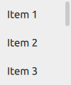

ScrollBar QML Type
Vertical or horizontal interactive scroll bar. More...
| Import Statement: | import QtQuick.Controls |
| Inherits: |
Properties
- active : bool
- horizontal : bool
(since QtQuick.Controls 2.3 (Qt 5.10)) - interactive : bool
(since QtQuick.Controls 2.2 (Qt 5.9)) - minimumSize : real
(since QtQuick.Controls 2.4 (Qt 5.11)) - orientation : enumeration
- policy : enumeration
(since QtQuick.Controls 2.2 (Qt 5.9)) - position : real
- pressed : bool
- size : real
- snapMode : enumeration
(since QtQuick.Controls 2.2 (Qt 5.9)) - stepSize : real
- vertical : bool
(since QtQuick.Controls 2.3 (Qt 5.10)) - visualPosition : real
(since QtQuick.Controls 2.4 (Qt 5.11)) - visualSize : real
(since QtQuick.Controls 2.4 (Qt 5.11))
Attached Properties
- horizontal : ScrollBar
- vertical : ScrollBar
Methods
Detailed Description

ScrollBar is an interactive bar that can be used to scroll to a specific position. A scroll bar can be either vertical or horizontal, and can be attached to any Flickable, such as ListView and GridView. It can also be used with ScrollView.
Flickable { // ... ScrollBar.vertical: ScrollBar { } }
Attaching ScrollBar to a Flickable
When ScrollBar is attached vertically or horizontally to a Flickable, its geometry and the following properties are automatically set and updated as appropriate:
An attached ScrollBar re-parents itself to the target Flickable. A vertically attached ScrollBar resizes itself to the height of the Flickable, and positions itself to either side of it based on the layout direction. A horizontally attached ScrollBar resizes itself to the width of the Flickable, and positions itself to the bottom. The automatic geometry management can be disabled by specifying another parent for the attached ScrollBar. This can be useful, for example, if the ScrollBar should be placed outside a clipping Flickable. This is demonstrated by the following example:
Flickable { id: flickable clip: true // ... ScrollBar.vertical: ScrollBar { parent: flickable.parent anchors.top: flickable.top anchors.left: flickable.right anchors.bottom: flickable.bottom } }
Notice that ScrollBar does not filter key events of the Flickable it is attached to. The following example illustrates how to implement scrolling with up and down keys:
Flickable { focus: true Keys.onUpPressed: scrollBar.decrease() Keys.onDownPressed: scrollBar.increase() ScrollBar.vertical: ScrollBar { id: scrollBar } }
Binding the Active State of Horizontal and Vertical Scroll Bars
Horizontal and vertical scroll bars do not share the active state with each other by default. In order to keep both bars visible whilst scrolling to either direction, establish a two-way binding between the active states as presented by the following example:
Flickable { anchors.fill: parent contentWidth: parent.width * 2 contentHeight: parent.height * 2 ScrollBar.horizontal: ScrollBar { id: hbar; active: vbar.active } ScrollBar.vertical: ScrollBar { id: vbar; active: hbar.active } }
Non-attached Scroll Bars
It is possible to create an instance of ScrollBar without using the attached property API. This is useful when the behavior of the attached scroll bar is not sufficient or a Flickable is not in use. In the following example, horizontal and vertical scroll bars are used to scroll over the text without using Flickable:
Rectangle { id: frame clip: true width: 160 height: 160 border.color: "black" anchors.centerIn: parent Text { id: content text: "ABC" font.pixelSize: 160 x: -hbar.position * width y: -vbar.position * height } ScrollBar { id: vbar hoverEnabled: true active: hovered || pressed orientation: Qt.Vertical size: frame.height / content.height anchors.top: parent.top anchors.right: parent.right anchors.bottom: parent.bottom } ScrollBar { id: hbar hoverEnabled: true active: hovered || pressed orientation: Qt.Horizontal size: frame.width / content.width anchors.left: parent.left anchors.right: parent.right anchors.bottom: parent.bottom } }
When using a non-attached ScrollBar, the following must be done manually:
- Layout the scroll bar (with the x and y or anchors property, for example).
- Set the size and position properties to determine the size and position of the scroll bar in relation to the scrolled item.
- Set the active property to determine when the scroll bar will be visible.
See also ScrollIndicator, ScrollView, Customizing ScrollBar, and Indicator Controls.
Property Documentation
active : bool |
This property holds whether the scroll bar is active, i.e. when it's pressed or the attached Flickable is moving.
It is possible to keep both horizontal and vertical bars visible while scrolling in either direction.
This property is automatically set when the scroll bar is attached to a flickable.
horizontal : bool |
This property holds whether the scroll bar is horizontal.
This property was introduced in QtQuick.Controls 2.3 (Qt 5.10).
See also orientation.
interactive : bool |
This property holds whether the scroll bar is interactive. The default value is true.
A non-interactive scroll bar is visually and behaviorally similar to ScrollIndicator. This property is useful for switching between typical mouse- and touch-orientated UIs with interactive and non-interactive scroll bars, respectively.
This property was introduced in QtQuick.Controls 2.2 (Qt 5.9).
minimumSize : real |
This property holds the minimum size of the scroll bar, scaled to 0.0 - 1.0.
This property was introduced in QtQuick.Controls 2.4 (Qt 5.11).
See also size, visualSize, and visualPosition.
orientation : enumeration |
This property holds the orientation of the scroll bar.
Possible values:
| Constant | Description |
|---|---|
Qt.Horizontal | Horizontal |
Qt.Vertical | Vertical (default) |
This property is automatically set when the scroll bar is attached to a flickable.
See also horizontal and vertical.
policy : enumeration |
This property holds the policy of the scroll bar. The default policy is ScrollBar.AsNeeded.
Possible values:
| Constant | Description |
|---|---|
ScrollBar.AsNeeded | The scroll bar is only shown when the content is too large to fit. |
ScrollBar.AlwaysOff | The scroll bar is never shown. |
ScrollBar.AlwaysOn | The scroll bar is always shown. |
The following example keeps the vertical scroll bar always visible:
Flickable { contentHeight: 2000 ScrollBar.vertical: ScrollBar { policy: ScrollBar.AlwaysOn } }
Styles may use this property in combination with the active property in order to implement transient scroll bars. Transient scroll bars are hidden shortly after the last interaction event (hover or press). This is typically done by animating the opacity of the scroll bar. To override this behavior, set the policy to ScrollBar.AlwaysOn or ScrollBar.AlwaysOff, depending on the size of the content compared to its view. For example, for a vertical ListView:
policy: listView.contentHeight > listView.height ? ScrollBar.AlwaysOn : ScrollBar.AlwaysOff
This property was introduced in QtQuick.Controls 2.2 (Qt 5.9).
position : real |
This property holds the position of the scroll bar, scaled to 0.0 - 1.0.
The largest valid scrollbar position is (1.0 - size). This gives correct behavior for the most used case where moving the scrollbar to the end will put the end of the document at the lower end of the visible area of the connected Flickable.
This property is automatically set when the scroll bar is attached to a flickable.
See also Flickable::visibleArea and visualPosition.
pressed : bool |
This property holds whether the scroll bar is pressed.
size : real |
This property holds the size of the scroll bar, scaled to 0.0 - 1.0.
This property is automatically set when the scroll bar is attached to a flickable.
See also Flickable::visibleArea, minimumSize, and visualSize.
snapMode : enumeration |
This property holds the snap mode.
Possible values:
| Constant | Description |
|---|---|
ScrollBar.NoSnap | The scrollbar does not snap (default). |
ScrollBar.SnapAlways | The scrollbar snaps while dragged. |
ScrollBar.SnapOnRelease | The scrollbar does not snap while being dragged, but only after released. |
In the following table, the various modes are illustrated with animations. The movement and the stepSize (0.25) are identical in each animation.
| Value | Example |
ScrollBar.NoSnap | |
ScrollBar.SnapAlways | |
ScrollBar.SnapOnRelease |
This property was introduced in QtQuick.Controls 2.2 (Qt 5.9).
See also stepSize.
stepSize : real |
vertical : bool |
This property holds whether the scroll bar is vertical.
This property was introduced in QtQuick.Controls 2.3 (Qt 5.10).
See also orientation.
visualPosition : real |
This property holds the effective visual position of the scroll bar, which may be limited by the minimum size.
This property was introduced in QtQuick.Controls 2.4 (Qt 5.11).
See also position and minimumSize.
visualSize : real |
This property holds the effective visual size of the scroll bar, which may be limited by the minimum size.
This property was introduced in QtQuick.Controls 2.4 (Qt 5.11).
See also size and minimumSize.
Attached Property Documentation
ScrollBar.horizontal : ScrollBar |
This property attaches a horizontal scroll bar to a Flickable.
Flickable { contentWidth: 2000 ScrollBar.horizontal: ScrollBar { } }
See also Attaching ScrollBar to a Flickable.
ScrollBar.vertical : ScrollBar |
This property attaches a vertical scroll bar to a Flickable.
Flickable { contentHeight: 2000 ScrollBar.vertical: ScrollBar { } }
See also Attaching ScrollBar to a Flickable.